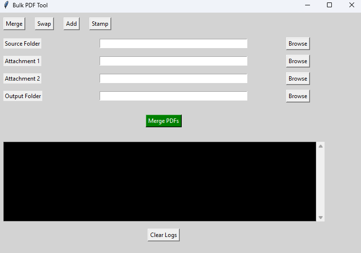

Selected work across automation, web development, and practical problem
solving.

Merge PDFs screen
Featured Project
Bulk PDF Tool
A desktop app that automates repetitive PDF work
across large folders. It helps users merge attachments, swap
pages, add pages, apply stamps, and review logs without manually
opening every file.
A municipal zoning lookup app that helps users
explore zoning polygons on an interactive map,
search by address, filter zoning features, and review normalized
by-law details in one place.